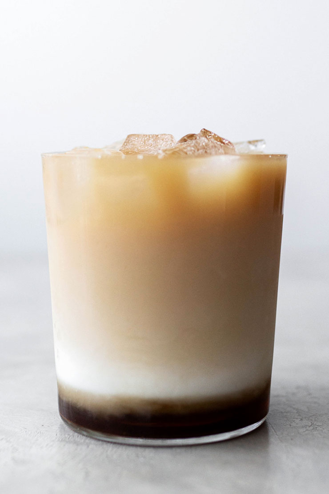

Iced Brown Sugar Tea Latte

For sugar lovers, this drink tastes like heaven. Add some pearls and you got yourself a homemade bubble tea.
Ingredients:
- 1 tbsp Brown Sugar
- 1 tbsp Water
- 1/2 cup Water
- 1/3 cup milk
- 1 bag Black tea
- 1/2 cup Ice
Instructions:
- Boil water and steep black tea according to package directions. Take out tea bag to avoid oversteeping and set aside to cool.
- In a pan, mix brown sugar and water. Heat until syrup forms.
- Line a glass wall with the brown sugar syrup and add ice.
- Add milk into glass to create bottom layer, then add cooled tea. Tip: pour tea over the ice to help separate layers.
- Enjoy!